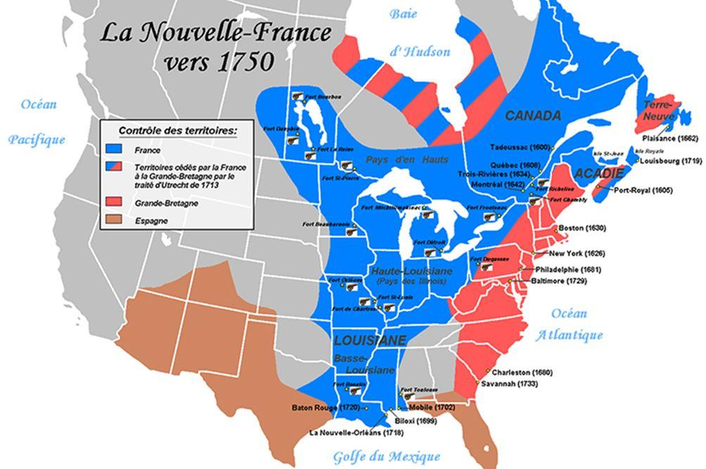
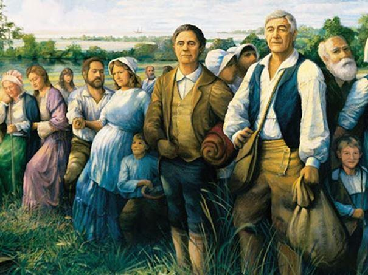
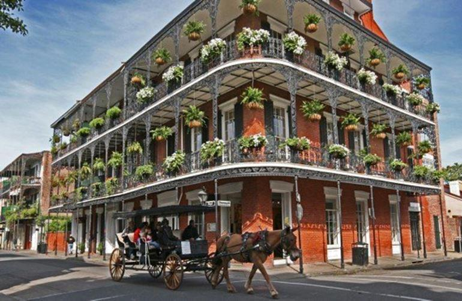

Aux États-Unis, plus de 13 millions d’habitants sont d’origine française. La grande majorité de ces Franco-Américains sont assimilés à l’univers anglo-saxon et anglophone, mais il existe encore des communautés francophones relativement importantes dans le sud de la Louisiane et dans le nord de la Nouvelle-Angleterre. Ce sont les Acadiens, les Cadiens, les Américains d’origine canadienne-française, les Créoles de Louisiane et la communauté française de l’État de New-York et vivant dans d’autres États.

La Louisiane française
Après la fondation de la ville de Québec et de la Nouvelle-France en 1608, les explorateurs et missionnaires français découvrent de nouveaux territoires dans la région des grands Lacs et jusqu’aux Montagnes Rocheuses. Ils découvrent également le grand fleuve Mississipi et ses affluents. Sur cet immense territoire, les Français établirent un certain nombre de forts, de postes de traite et de villages qui vont devenir de grandes villes américaines comme Saint-Louis, Détroit ou Sault Sainte Marie. Ils ont construit une série de forts dans la région du Mid-Ouest tels que Fort-Miami, Fort Saint-Louis ou Fort Orléans. Ces forts étaient défendus par des soldats et des trappeurs qui faisaient la traite des fourrures qu’ils revendaient à des marchands de Montréal.
En 1682, l’explorateur Normand Cavelier de La Salle à la tête d’ une expédition française découvrent le delta du Mississipi. Il baptise la région « Louisiane » en l’honneur du Roi de France.
Au début du XVIIIème siècle, la France dispose d’un immense empire colonial qui va du fleuve Saint-Laurent aux Montagnes Rocheuses et des Grands Lacs au Golfe du Mississipi. Malheureusement, ce vaste territoire est peu peuplé et manque de moyens matériels pour assurer sa mise en valeur. On estime que 7 000 émigrants français sont venus s’installer en Louisiane.
En 1763, suite aux batailles de la guerre de Sept-ans et aux défaites françaises de Québec (1759) et de Montréal (1760), par le de traité de Paris, la France renonce à ces possessions d’Amérique. L’Angleterre prend possession du Canada. Par le traité de Fontainebleau, la France remet la Louisiane à l’Espagne.
En 1800, la Louisiane redevient française, mais en 1803, Napoléon Bonaparte vend cette immense colonie américaine aux États-Unis.
Les Cadiens de Louisiane
En 1755, les Acadiens de Nouvelle-Ecosse ont refusé de prêter d’allégeance à la couronne britannique. Ces anciens sujets du Roi de France ont désiré rester des « Français neutres » en refusant de prêter serment au Roi d’Angleterre et de ne pas porter les armes contre les soldats français. Par représailles, le gouverneur anglais Charles Lawrence les a expulsé de leurs terres et de leurs fermes et les fit déporter dans les treize colonies britanniques de la côte Atlantique.
Pendant les années suivantes, plus de 7 000 Acadiens déportés firent un grand voyage pour se rendre en Louisiane, où ils commencèrent une nouvelle vie et s’établirent dans la région marécageuse des Bayous.
Aujourd’hui, les 24 paroisses de la région d’Acadiana sont peuplées d’une importante communauté de plus de 250 000 Cajuns, de culture acadienne et francophone.
Les Créoles de Louisiane
La plupart des Créoles habitent le sud et le sud-ouest de la Louisiane. En Californie,
les Créoles vivent surtout à Los Angeles, San Diego et San Bernardino.
Le créole louisianais est une langue créole française parlée au sud de la Louisiane. Cette langue a de nombreuses ressemblances avec d’autres créoles français parlés dans les Caraïbes.
La vente de la Louisiane en 1803 provoqua une division culturelle entre les francophones et les Anglo-saxons. Le premier gouverneur américain de Louisiane avait pour but d’assimiler les francophones. Les anciens habitants de la colonie s’identifient en tant que Créoles pour se distinguer des Anglo-Saxons.
A la Nouvelle-Orléans, la rue du Canal marque la frontière linguistique entre les quartiers de langue française et anglaise. Les francophones vivent surtout dans le célèbre « Quartier français ».

Quartier français de la Nouvelle-Orléans
Les Indiens Houmas de Louisiane
En Louisiane, il existe encore un peuple amérindien francophone. Les Houmas forment une communauté de plus de 15 000 personnes. Autrefois, ils vivaient essentiellement dans les trois paroisses louisianaises de Féliciana Ouest, Féliciana Est et de la Pointe Coupée. Aujourd’hui, ils vivent surtout à l’ouest de l’embouchure du Mississipi.
Lors des conflits qui opposèrent la France et l’Angleterre, les Houmas prirent le parti des Français.
En raison de cette alliance, après la guerre de Sept Ans, ils subirent des représailles de la part des Anglais et durent se replier dans le sud de la Louisiane française dans les paroisses de Terrebonne et de Lafourche.
La découverte du pétrole sur leur territoire fut une nouvelle spoliation pour les Houmas.
Ils furent expulsés des zones pétrolifères et ne purent profiler de cette manne financière.
Aujourd’hui, les Houmas, tout comme les Cadiens et les Créoles de Louisiane, revendiquent leur appartenance à la Francophonie.
De la Guerre d’indépendance à la Guerre de Sécession
En 1778, la France déclare la guerre à l’Angleterre et envoie un corps expéditionnaire en Amérique pour prendre part activement au combat des insurgés des colonies anglaises pour acquérir leur indépendance. La Fayette et Rochambeau deviennent de véritables héros de la Guerre d’Indépendance des États-Unis. De nombreux américains d’origine huguenotte participent à la lutte pour l’indépendance comme Francis Marion ou le général William Lenoir. Certains Canadiens-français de la province de Québec s’engagent aussi aux côtés des insurgés et des troupes françaises.
Les Franco-américains ont participé également aux combats de la Guerre de Sécession. Au nombre de 20 à 40 000, ils ont combattu dans les rangs de l’Union. On peut citer le nom du major-général Jesse Lee Reno (Renault, en français) et du général Georges Bayard. Dans le camp des sudistes, les Louisianais ont servi la cause des Confédérés avec le général Beauregard.
L’immigration des Canadiens-français aux États-Unis
De 1840 à 1930, un million de Canadiens français du Québec franchissent la frontière et viennent s’installer et travailler en Nouvelle-Angleterre et dans l’État du Michigan.
Cette importante immigration s’explique par le taux de natalité très élevé des Canadiens-français, une pénurie de main-d’œuvre ouvrière aux États-Unis et surtout en Nouvelle-Angleterre qui connaissait un grand développement industriel et aussi en raison de la crise économique dans les années 1930. Les Canadiens-français allèrent travailler dans le secteur du textile qui était une activité majeure de cette région.
Certains deviennent marchands ou accèdent à des professions libérales.
Au début du XXème siècle, les Franco-américains s’enracinèrent dans leur nouvelle patrie et s’installèrent dans plusieurs villes de Nouvelle-Angleterre tout en conservant leur langue maternelle française, la religion catholique et leurs traditions canadienne-française. Ils vivent dans des « petits Canadas » comme à Manchester dans le New-Hampshire, Lowel et Lawrence dans le Massachussets, Woonsocket, dans le Rhode Island, Biddeford et Lewiston, dans le Maine.
Il existe également des communautés de Franco-américains dans les Etats suivants : Vermont, Connecticut, Michigan, Montana, Minnesota, Wisconsin, Dakota du Nord, Wyoming, Missouri, Kansas, Washington, Oregon et Alaska.
Les Etats qui possèdent des communautés franco-américaines les plus importantes sont les suivants : Californie : 1 210 000, Louisiane : 1 070 000, Massachussets : 850 573, Michigan : 706 560, New-York : 680 208 et Floride : 630 000.
Plusieurs villes du Maine sont peuplés d’une majorité de francophones : Madawaska, Fort Kent, Van Buren, Frenchville, Eagle Lake, St Agatha, St Francis, Grande Isle, St John Plantation et Hamlin.
En Louisiane, 24 paroisses de la région d’Acadia ont des communautés francophones importantes comme Saint-Martin, Evangeline ou Lafayette.
L’immigration dans l’Ouest canadien
Les Canadiens-français se déplacèrent également dans différentes provinces anglophones du Canada comme l’Ontario ou le Manitoba. Ils travaillèrent dans l’industrie du bois ainsi que dans l’industrie des Grands Lacs.
Après la pendaison du patriote Louis Riel et du génocide de la nation métis dans l’Ouest canadien, le gouvernement fédéral d’Ottawa mis en œuvre une politique de colonisation de l’Ouest canadien en distribuant des subventions et des terres aux nouveaux immigrants venus de plusieurs pays européens et aussi du Québec.
Aujourd’hui, dans les villes et villages, des communautés francophones existent encore au Manitoba, en Alberta et dans la Saskatchewan.
La communauté française des États-Unis
Au XIXème et XXème siècles, de nombreux Français viennent tenter leur chance aux États-Unis. Ils participent à la ruée vers l’or et s’installent sur la côte Est, en Californie et en Floride. De 1820 à 1920, plus de 530 000 Français se sont installés aux États-Unis.
Aujourd’hui, la communauté française est au nombre de plus de 200 000 personnes. Ce sont des Français inscrits dans les différents consulats des États-Unis. À New-York : 30400 inscrits, San Francisco : 19 225, Los Angeles : 16254, Washington : 13508 inscrits, Miami : 11 266 inscrits, Chicago : 9850 inscrits, Houston : 7761 inscrits, Boston : 7181 inscrits, Atlanta : 6462 inscrits, La Nouvelle-Orléans : 779 inscrits.
Après l’Allemagne et la Suisse, c’est la troisième communauté européenne des États-Unis.
Les États-Unis est une terre d’accueil très appréciée des Français et de nombreux francophones.
Les Français sont surtout installés sur la côte Nord-Est (New-York, Whashington, Boston) la Californie (Los Angeles, San Francisco) et la Floride (Miami).
La francophonie aux États-Unis
Plus de 13 millions d’Américains se déclarent d’origine française dont la grande majorité est assimilée au monde anglo-saxon et anglophone. Selon le recensement de 2000, plus de 1 600 000 Franco-Américains parlent le français à la maison. La communauté française est évaluée a plus de 200 000 personnes. Au total, le nombre de Français et de Franco-Américains parlant le français quotidiennement est évalué à plus de 2 100 000 habitants.
Le français est la cinquième langue la plus parlée dans ce pays, derrière l’anglais, l’espagnol, le chinois. C’est la deuxième langue la plus parlée dans les États suivants : la Louisiane, le Maine, le New Hampshire et le Vermont.
Plus de 450 000 personnes parlent le créole haïtien.
En 1968, sous l’impulsion du sénateur James Demongeaux, président du CODOFIL, le Parlement louisianais va rétablir un statut officiel à la langue française qui va devenir la seconde langue de Louisiane.
Dans cet État du sud des États-Unis, le français n’a jamais totalement disparu. Les anciennes générations le parlent toujours et les jeunes s’intéressent de nouveau à leurs origines françaises.
Depuis plus de trente ans, l’Organisation Internationale de la Francophonie a envoyé des centaines d’enseignants français, belges, québécois, suisses et maghrébins pour enseigner la langue française aux élèves et aux futurs enseignants.
Dans les 24 paroisses de la région d’Acadiana, les francophones louisanais affichent avec fierté leur appartenance à la francité dans les rues, les radios locales, la presse et lors des festivals de musique Cajun.
Aux États-Unis, le français est actuellement la deuxième langue étrangère la plus étudiée, devant l’allemand et derrière l’espagnol. La plupart des écoles secondaires américaines offrent des cours de français.
Considéré comme la langue de culture européenne et de la diplomatie, le français est langue étrangère choisie par les anglophones dans de nombreux pays du monde.
Au niveau universitaire, avec 216 419 étudiants, le français est la seconde langue étrangère.
Partager cette page